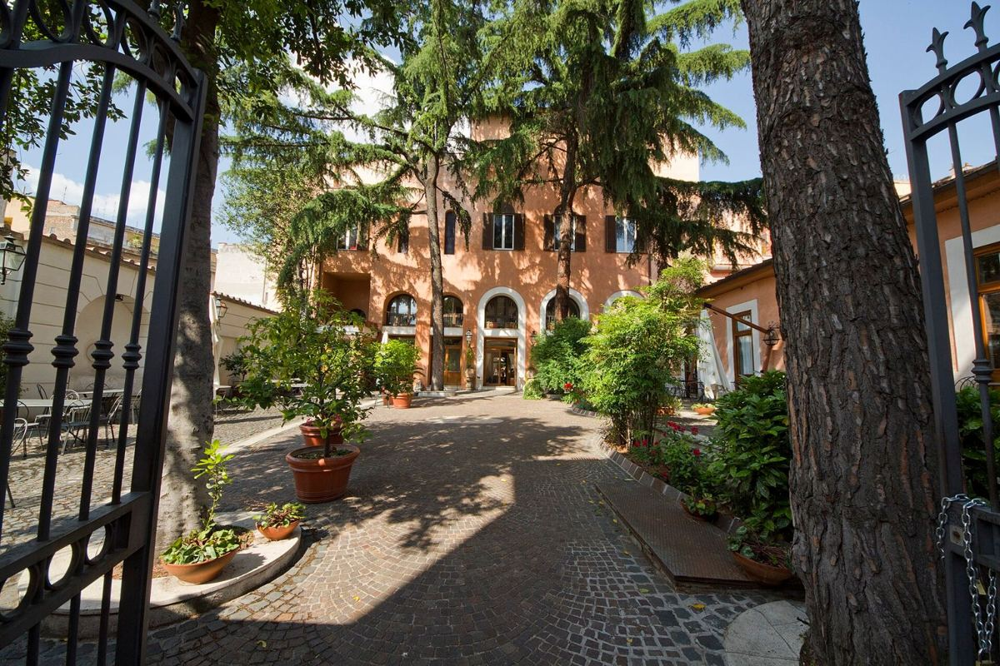
Giovedì
XXVBenvenuti a Roma
Unos 3 kmPaseo corto para la primera noche: el Coliseo iluminado y vacío es otra cosa.
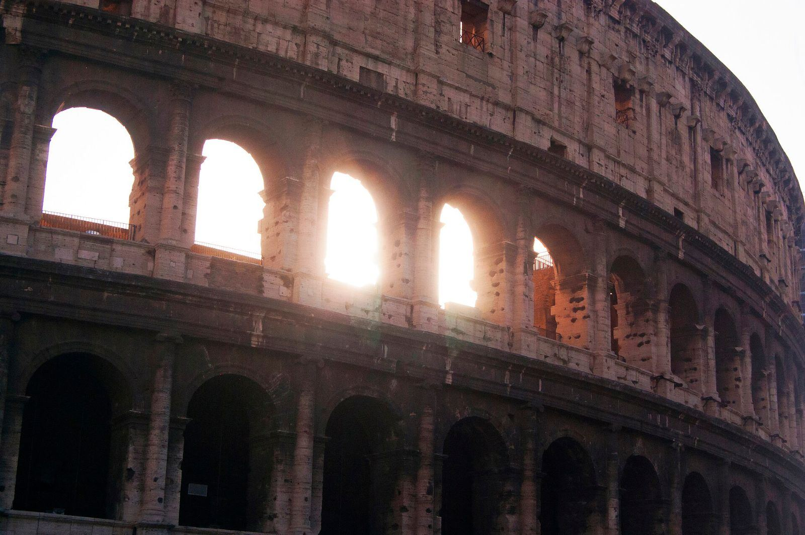
XXV — XXVIII · II · MMXXVII
Cuatro días, dos ciudades, una ciudad enterrada bajo el Vesubio y una noche que todavía es secreto.
Un primer piso en un edificio histórico, con una habitación para cada uno, a pocos pasos de los Foros Imperiales.
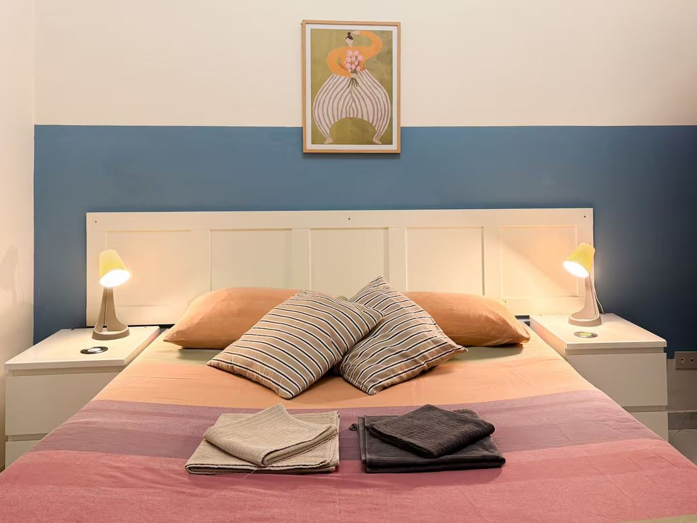
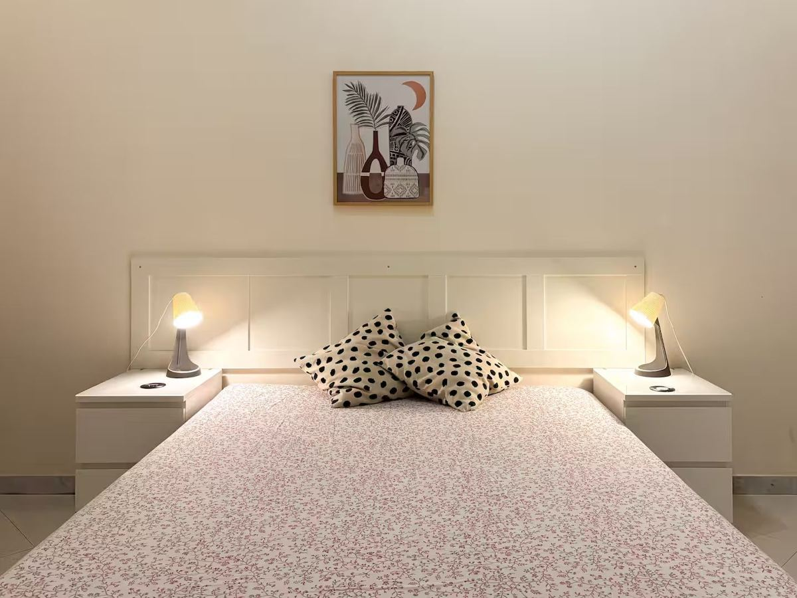
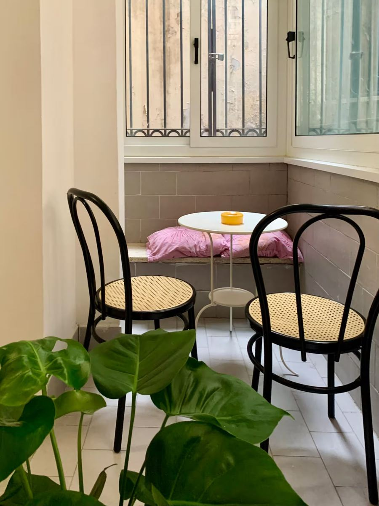
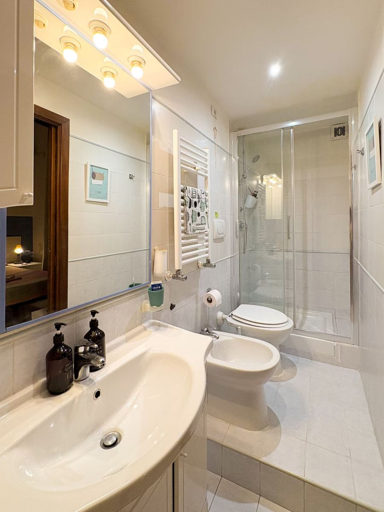
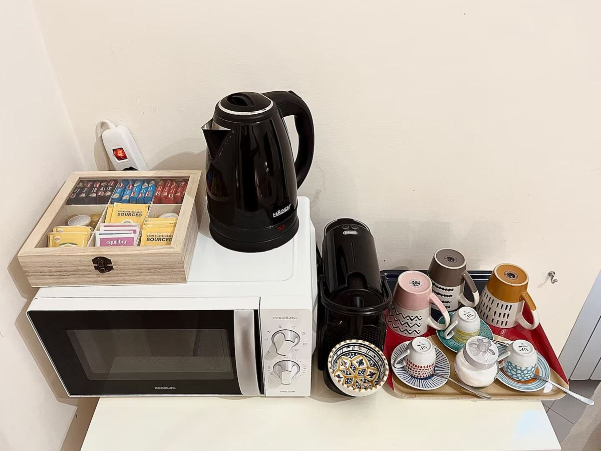

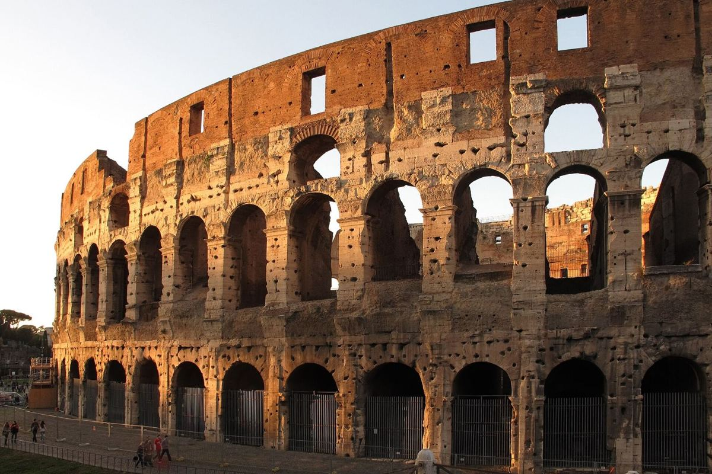
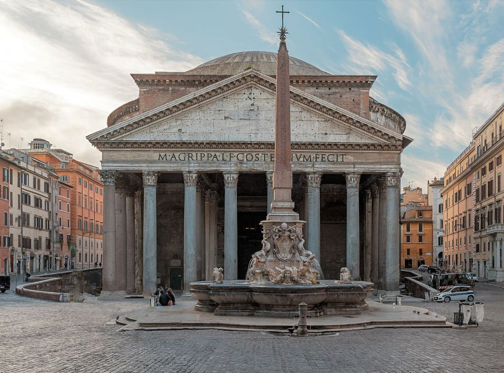
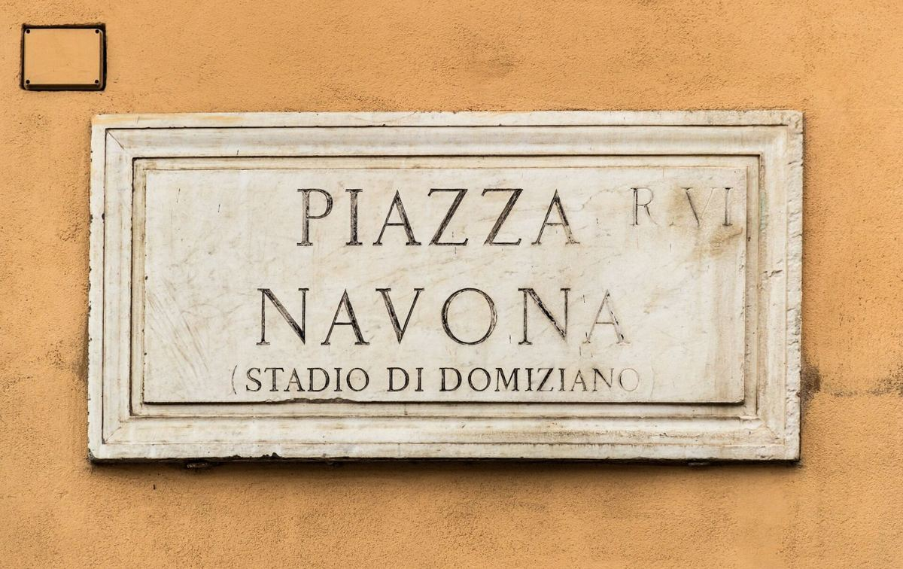
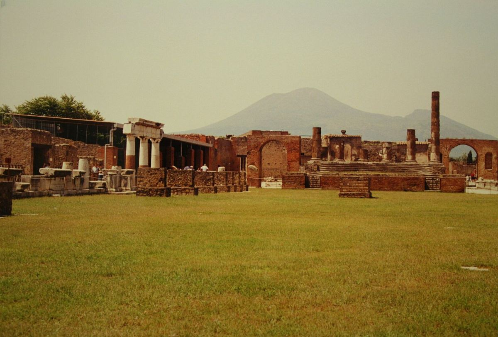
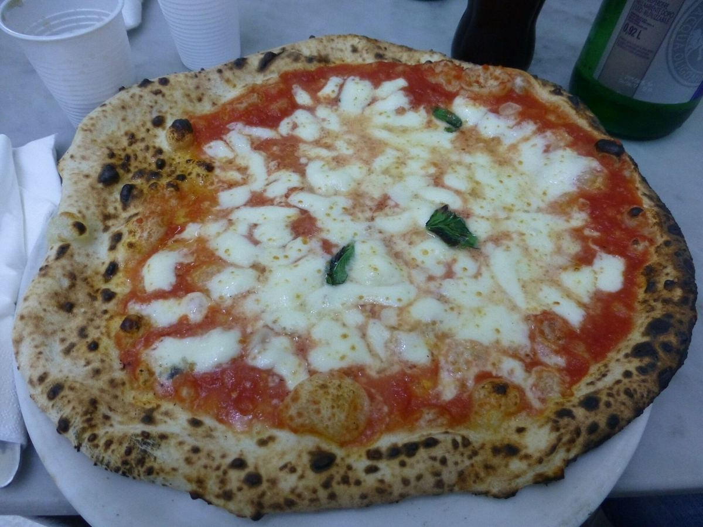
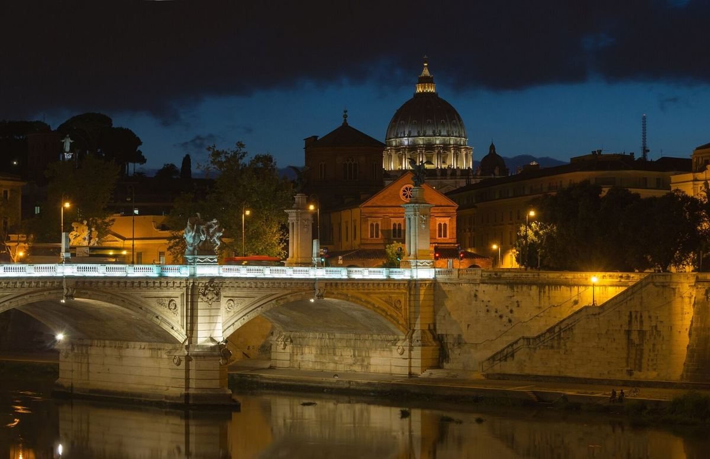
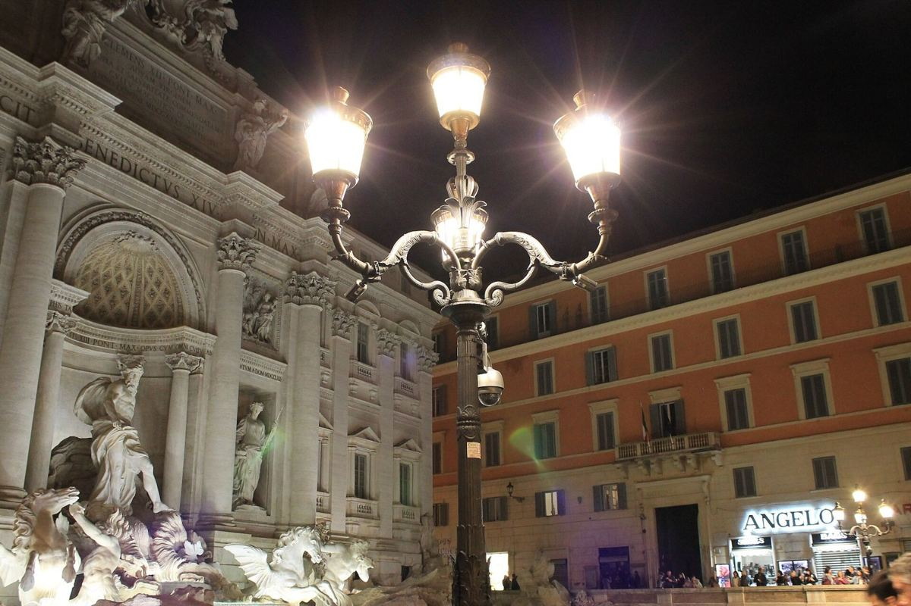
Elige un día para ver su recorrido a pie. Toca una parada para abrirla en Google Maps.
Lo que ya está en el plan y lo que podemos añadir. Marcad con el corazón lo que os apetezca y luego elegid qué día lo hacéis.
Cuatro decisiones para tomar juntos. Se pueden cambiar cuando queráis.
Todo se guarda en este iPhone.
Todo se guarda solo en este iPhone. Asignad a cada plan un día y apuntad lo que se os ocurra.
Todo se guarda en este iPhone.
Lo que no puede faltar estos cuatro días.
Pasta, pecorino romano y pimienta negra. Tres ingredientes y ningún truco.
Con guanciale, yema y pecorino. Sin nata, nunca.
Croqueta de arroz con mozzarella dentro que se estira al morderla.
Bollo relleno de nata para el desayuno, con un cappuccino.
Borde alto y blando, tomate San Marzano y fior di latte.
Hojaldre crujiente relleno de ricotta y naranja, para el tren de vuelta.
Sellado hasta el viernes 26 a las 19:30.
Mañanas frescas y mediodías templados. Puede caer algún chaparrón: paraguas plegable.
Las entradas son nominativas y pueden pedir identificación en la puerta.
Roma se ve a pie y Pompeya es empedrado sin sombra. Zapatillas cómodas y tiritas.
Roma la cobra por persona y noche. Se paga al llegar al alojamiento.
0 de 8 listos